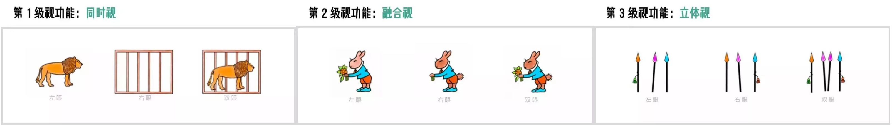

我国青少年总体近视率
高中生近视率
近视青少年中存在视功能异常的比例
青少年长时间近距离用眼是近视发展的主要因素
视功能异常导致视觉疲劳和注意力下降
视功能不仅指"视力"（看清远处物体的能力），更包括双眼协调、聚焦、追踪等动态能力，如同身体的"运动功能"。
调节滞后：眼睛在看近时，聚焦点实际落在视网膜后方，这是近视发展中一个关键的风险因素。
调节灵活度不足：眼睛聚焦在远近物体间切换的速度慢、不灵敏，导致看远近转换时模糊或疲劳。
集合不足：双眼向内聚合看近处物体的能力弱，易出现复视、眼胀、阅读串行。
集合过度：双眼过度内聚，导致紧张和疲劳。
双眼图像融合为单一立体图像的能力差，影响视觉舒适度和持久性。

视功能检查是发现异常的关键
视觉训练并非"治愈"近视，而是通过改善功能性问题，打破上述恶性循环。
目标：减少调节滞后，增加调节灵敏度和幅度。
原理：通过特定的光学刺激锻炼睫状肌，使看近时的焦点更准确地落在视网膜上，减少因调节滞后带来的"成像超前"刺激。
目标：建立舒适、持久的双眼协同工作能力。
原理：训练眼外肌的协调运动，提升双眼集合与分开的能力，促进大脑融合双眼图像，从而极大缓解因双眼"打架"引起的视疲劳。
直接效果：视功能优化后，进行同等负荷的近距离用眼时，眼部肌肉更省力、更高效，疲劳感显著下降。
理论支持：改善调节滞后可能减少视网膜周边的远视性离焦信号；缓解视疲劳有助于减少不良用眼行为；提升视觉舒适度，可能让孩子更愿意进行户外活动。
如眼酸、胀痛、头痛、阅读不耐受等症状减少。
调节灵活度、集合能力等测量值恢复正常范围。
可能间接改善学习专注度。
青少年近视后，不应只满足于验配眼镜。应主动前往具备视功能检查能力的医疗机构进行全面视光检查。
视觉训练需要时间、耐心和坚持，不会立竿见影。它不是"视力康复"，而是"功能康复"。
将视觉训练融入整体的健康用眼生活，同时保证户外活动、正确读写姿势和良好照明环境。
寻求专业视光师进行评估和训练指导，避免非科学的"视力保健"陷阱。